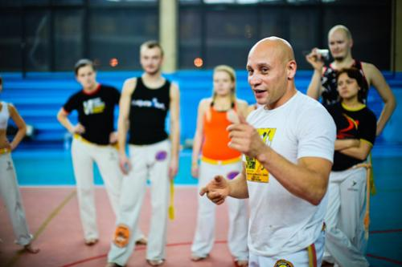
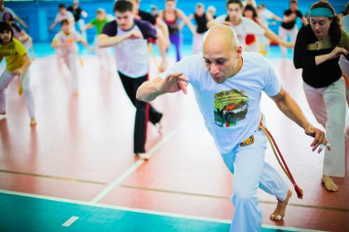
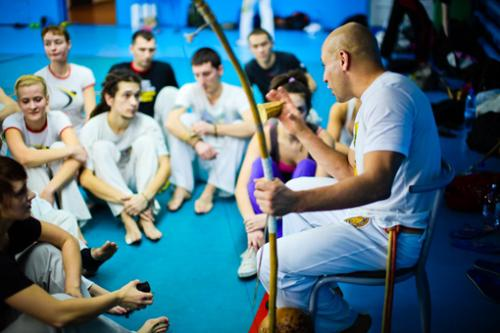
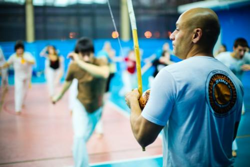
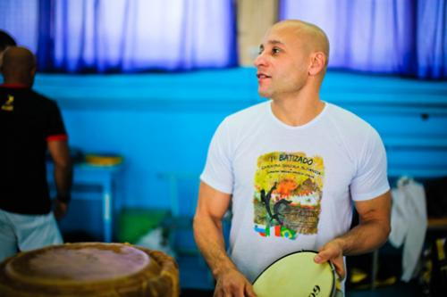

Mestre Luis Claudio — наброски к будущей книге
Я искренне надеюсь на то, что примерно через полвека, когда Luis Cladio будет стареньким мастером, он сможет раздавать автографы фанатам на форзаце своей собственной книги. Пока что он записывает свои мысли в тетрадку после каждой тренировки, а я собираю его цитаты из писем, семинаров, бесед здесь. Рассчитываю на постоянный апдейт поста.
● Я раньше думал, что мастера ничего не объясняют на занятиях, сердился на них. Потом понял, что не мастера не объясняют — это ученики не задают вопросов. Семинар не должен быть монологом мастера, он должен быть его диалогом с учениками. Задавайте вопросы!
● Почему надо вставать на руки на всю ладонь, а не на пальцы? Так проще? Нет, проще — остаться дома на диване…
● Мир капоэйры не такой уж большой, и два игрока всегда встретятся у pe do berimbau
●
— Mestre, как научиться делать макаку?
— работать над ней каждый день, только так. Капоэйра — как любовь, как отношения, над которыми тоже надо работать каждый день
● Рода капоэйры – это океан. Когда кто-то неподготовленный входит в роду, он входит в мой мир. Я в этом мире как акула, а многие даже не умеют плавать.
● Капоэйрист играет для себя, не для того, чтобы показать, продемонстрировать себя кому-то другому. Не для того, чтобы казаться лучшим. Капоэйрист играет для того, чтобы играть, чтобы чувствовать себя свободным, чтобы получать удовольствие, для свободы, для того, чтобы ощущать эмоции жизни, эмоции от опасности, от malandragem, от каждого проживаемого момента
● Допустим, вы нашли свой путь в капоэйре. У вас есть своя школа, свой мастер и своя дорога, по которой вы идете с их помощью. Но никто не мешает вам по дороге собирать плоды с деревьев, растущих у вас на пути, по краям вашей дороги, и пользоваться ими.
● Я часто вижу, как люди играют напоказ, чтобы что-то продемонстрировать своему мастеру, каким-то людям в кругу. Зачем вы так делаете? Играйте для себя, играйте для своего партнера, больше ни для кого.
● Я не понимаю различий в стилях игры. Я всегда играю капоэйру. Я не говорю: «сейчас я поиграю Анголу, а сейчас бенгелу, а сейчас режионал». Нет. Я слышу беримбау и слушаюсь того ритма, что он играет, но мои движения, моя пластика, моя философия игры, моя капоэйра от этого не меняются.
● Есть вещи, которые мне кажутся странными в деятельности других групп, но я никогда не позволяю себе сказать, что это неправильно. Например, вы используете ритм Sao Bento Grande de Bimba, но при этом в батерии у вас три беримбау, два пандейру, атабак и агого. Это неправильно? Нет, так нельзя сказать. Это ваш способ организации роды и ваш подход, я буду уважать его. Но есть разница между разными способами организации роды капоэйры и тем, что действительно неверно, неправильно. Например, вы играете самбу и используете беримбау в батерии. Вообще-то, беримбау не используется в самбе. Но я не скажу вам, что из-за этого ваша самба неправильная. Но вот когда вы абсолютно не попадаете хлопками в ритм самбы – это уже точно неправильно.
● Проблема многих современных школ, которые не хотят смотреть по сторонам – это их уязвимость. Они учатся играть только с людьми своей же техники, они привыкают к тому, что удары следуют с определенных сторон, и часто оказываются не готовы к неожиданным поворотам в игре.
● Возможно, вам покажется это удивительным, но многие из вас, европейцев, знают о бразильской культуре больше самих бразильцев.
● Вы очень много беспокоитесь насчет выверенной техники, четкой базы, правильных движений в игре – физической составляющей капоэйры. Но иногда лучше уделить больше внимания тому, чтобы прочувствовать игру, партнера, синхронизироваться с беримбау, начать именно играть, а не просто двигаться, используя заученные движения.
● Честно говоря, мне нет дела до того, как тот или иной капоэйрист делает, допустим, кишаду. Это вопрос его стиля, вкуса, опыта, понимания игры. Местре Пейшиньу не требовал от всех своих учеников одинаковой идеальной кишады, ему было важнее то, как эта кишада работает в игре, может ли ученик делать ее с разных позиций и выбирать для нее правильное время.
● Самые важные основы капоэйры для меня, которые я передаю ученикам:
- время (каждое движение имеет ценность, когда делается в свое время. Впрочем, это правило для всей жизни – Tudo na vida acontece na hora certa)
- дистанция (разные удары предполагают свою дистанцию, свое расстояние до противника, в зависимости от дистанции одни удары теряют смысл, другие – приобретают. Всегда следите за расстоянием, меняйте его, если это необходимо для вашей игры)
- ритм (Ритм управляет очень многим в этом мире – он есть в музыке, в ходьбе, в любви, в движении, он должен быть и в вашей капоэйре. Ритм вам задает беримбау – так слушайте его, он поможет играть)
- вовлеченность, погруженность (без вовлеченности капоэйра остается на уровне фитнеса)
- восприятие (от вашего восприятия зависит все – ваша игра; то, ты как вы будете сыгрываться с оппонентом; то, будете ли вы слышать инструменты; ваша реакция на происходящее в игре)
- гармония (Идеальная ситуация – это совпадение всего сразу – музыки, хлопков, песен, настроения игроков, их уважение друг к другу, темпа их движений. Если однажды вам повезет наблюдать эту гармонию в роде, играть в ней – вы не будете спрашивать, что такое „Аше“).
● Давайте игре развиваться, давайте ей делать новые повороты. Пусть два игрока поговорят, пусть они поспорят, поссорятся, помирятся, пусть успеют довести диалог если не до конца, то хотя бы до логической паузы.
● В капоэйре необходимо экспериментировать, пробовать, доказывать, проверять, чувствовать все. Может не все, не до самой глубины, но делать это постоянно, чтобы обрести понимание.
● Все роды могут быть прекрасны, все могут быть полны энергии. Даже те, что мы ежедневно устраиваем в академиях. Очарование каждой из них зависит от твоего состояния души.
● Хороший капоэйрист получает одну раштейру, а отвечает тремя.
● Я вижу, что многие люди боятся падать в капоэйре, боятся проигрывать. Возможно, им кажется, что падение означает проигрыш. Нет такого, есть неумение красиво падать и неспособность продолжать игру после неожиданного падения. Учитесь не только бить и подсекать, учитесь и падать.
● Одно из умений капоэйриста – умение подстраиваться, адаптироваться, следовать за ситуацией, другим игроком. Я замечаю, что медленнее других развиваются в капоэйре люди, чей ум закрыт для восприятия, те, кто не любит перемены, не хочет меняться. В капоэйре же нужно все время меняться. В зависимости от возраста, опыта, веса, роста вашего партнера ваши движения преобразуются, и вы играете по-новому с каждым человеком.
● Будьте предусмотрительны. Прежде, чем сделать мартелу человеку, который в два раза выше, крупнее, тяжелее, быстрее вас, подумайте – а готовы ли вы принять от него ответный удар?
● Не перекладывайте ответственность за свое развитие полностью на своего учителя. Тренировки в зале – это всего лишь малая часть вашего роста в капоэйре. Сами тренируйтесь, экспериментируйте, посещайте семинары, читайте, смотрите видео, узнавайте новое о капоэйре, сами ищите информацию. Это вообще большая проблема европейских капоэйристов – отсутствие информации и желания ее искать, получать, усваивать.
● Цифр всего 10 – от 0 до 9. Но из них вы можете создать бесчисленное число комбинаций и получить новые значения. То же самое в капоэйре. В ней можно играть всего пятью-семью простейшими движениями, и это будет тем не менее прекрасно.
● Есть люди, которым больше нравится «гимнастика» в капоэйре. Думаю, они всегда будут чувствовать силу, которая дает капоэйра и свою силу в ней, но у них вряд ли получится ощутить магию капоэйры, весь ее вкус. Но это можно увидеть только с годами — что ты чего-то недополучаешь в капоэйре.
● Невозможно запомнить все, что говорится и показывается на семинарах, особенно, если у тебя недостаточно терпения, чтобы слушать. У меня одна привычка, которой я придерживаюсь всю жизнь до сегодняшнего дня — я записываю все после занятий. Все, что я даю на уроках, что-то интересное, что я наблюдаю на чужих уроках, слова и мысли других мастеров, неожиданные движения учеников — все попадает в мою записную книжку, осмысливается и обдумывается.
● Чтобы научиться делать удары, не требуется так уж много времени. Чтобы научиться играть капоэйру, и жизни не хватит.
Я позволила себе написать «Mestre Luis Claudio», потому что уже в июне приставка «Contra» станет неактуальной.
Благодарю за фотографии Андрея Гирко и Веру Голосову.




